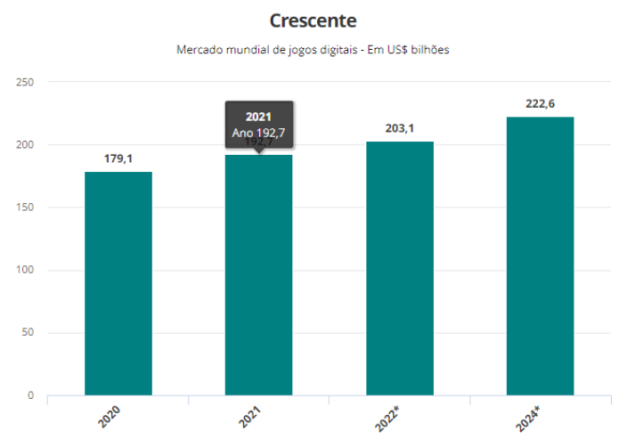

Mercado de Games
Gamer Money
Com mercado que gira US$ 2,5 bi ao ano no Brasil, bancões estão de olho no "gamer money"
País é o 10º colocado no ranking mundial por receita gerada com jogos digitais, com 92,4 milhões de jogadores Nos últimos cinco anos, o número de jogadores de videogame cresceu 27%. Para este ano, o número estimado é de 3,1 bilhões de pessoas ao redor do planeta. Até 2024, deve aumentar em mais 12%. O volume de negócios acompanha o crescimento. Entre 2020 e 2021, período mais severo da pandemia, o faturamento da indústria de games passou de US$ 179,1 bilhões para US$ 192,7 bilhões, uma alta de 7,6%. Este ano deve girar US$ 203,1 bilhões e a projeção para 2024 é de um crescimento de 15,5% na comparação com 2021, segundo a Newzoo. Nesse cenário, o Brasil tem uma parcela significativa nos negócios. O país é o décimo colocado no ranking mundial por receita gerada por jogos digitais, com 92,4 milhões de jogadores, que consumiram US$ 2,5 bilhões em produtos e serviços no ano passado. A lista é liderada pela China, com quase 700 milhões de gamers e volume de cerca de US$ 50 bilhões em negócios, seguida pelos Estados Unidos, com 191 milhões de usuários e giro de US$ 47,3 bilhões. Os dados constam do Gamer Consumer Research, realizado em 33 mercados em todo o mundo. De olho nesse nicho bilionário, grandes bancos lançaram produtos e serviços com linguagem direcionada e soluções para atender às principais demandas financeiras dos gamers, principalmente da chamada Geração Z, pessoas até 24 anos, que estão iniciando sua jornada financeira. Uma das maiores novidades entre o bancões foi o lançamento do banco digital Player's Bank, do Itaú Unibanco, que vem para disputar o público jovem com as fintechs. Além das funcionalidades recorrentes de um banco digital, como cartão de crédito sem anuidade e conta remunerada, o Player's Bank foca no conceito de comunidade, muito característico desse segmento. O aplicativo oferece visual (chamado 'skin' na comunidade) personalizável, cashback de até 5% nas compras feitas nas lojas parceiras e atendimento exclusivo feito pelo Discord, o programa “oficial” de comunicação entre os gamers.
Alta nos Preços
"Tem jogo de R$600" - por que games continuam caros se o imposto caiu 4x?
Os impostos sobre games já tiveram quatro reduções durante o atual governo, sendo a última no mês de julho. Porém será que os preços, de fato, baixaram? Segundo percepção de jogadores e profissionais ligadas ao segmento consultados por Tilt, as iniciativas do governo não surtiram esse efeito. Pelo contrário, os valores acabaram subindo. A escalada de preços tem vários motivos. Em parte, por causa da alta do dólar nos últimos anos; mas também por causa da falta de microcircuitos que afetou o mercado global de eletrônicos após a pandemia de covid-19; e pela escassez de produtos, como o PlayStation 5 (também em decorrência da crise na cadeia de suprimentos).PlayStation consegue baixar preços Contatada por Tilt, a Sony demonstrou a diminuição de valores no PlayStation após as três primeiras reduções de IPI (Imposto sobre Produto Industrializado).
Agosto de 2019 - Primeira Redução do IPI
- PS4 - de R$ 2.599 por R$ 2.399
- PS4 Pro - de R$ 2.999 por R$ 2.799
- PlayStation VR - de R$ 2.799 por R$ 2.599
- Controle Dualshock 4 - de R$ 259 por R$ 249
Novembro de 2020 - Segunda Redução do IPI
- PS5 com entrada de mídia - de R$ 4.999 por R$ 4.699
- PS5 versão digital - de R$ 4.499 por R$ 4.199
- Controle DualSense - de R$ 499 por R$ 469
- HD Camera - de R$ 449 por R$ 419
Agosto de 2021 - Terceira Redução do IPI
- PS5 com entrada de mídia - de R$ 4.699 por 4.399,90
- PS5 versão digital - de R$ 4.199 por 3.899,90
- PS4 - de R$ 2.799,90 por R$ 2.599,90
- Controle DualSense Branco - de R$ 469,90 por R$ 439,90